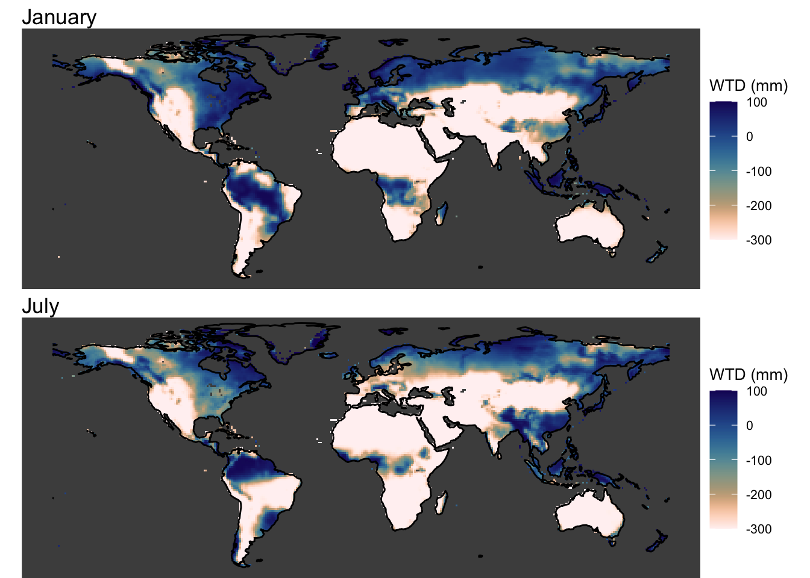
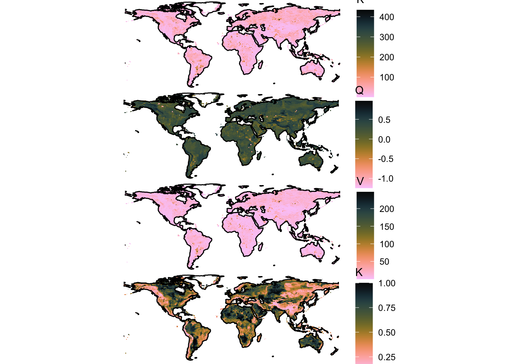
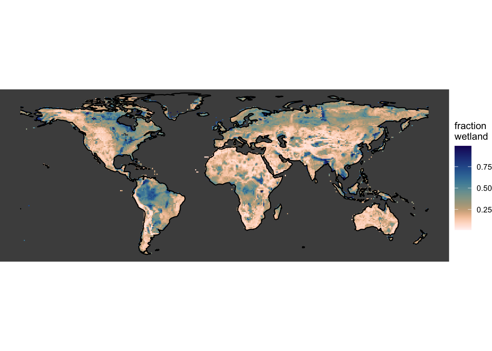

Das folgende Objekt ist maskiert 'package:stats':
filter
library(ggplot2)library(sf)
Linking to GEOS 3.13.0, GDAL 3.8.5, PROJ 9.5.1; sf_use_s2() is TRUE
library(rnaturalearth)library(rnaturalearthdata)
Attache Paket: 'rnaturalearthdata'
Das folgende Objekt ist maskiert 'package:rnaturalearth':
countries110
library(cowplot)library(ggspatial)library(dplyr)
Attache Paket: 'dplyr'
Die folgenden Objekte sind maskiert von 'package:terra':
intersect, union
Die folgenden Objekte sind maskiert von 'package:stats':
filter, lag
Die folgenden Objekte sind maskiert von 'package:base':
intersect, setdiff, setequal, union
library(tidyr)
Attache Paket: 'tidyr'
Das folgende Objekt ist maskiert 'package:terra':
extract
library(here)
here() starts at /Users/benjaminstocker/dyptop_tutorial
library(khroma)
Attache Paket: 'khroma'
Das folgende Objekt ist maskiert 'package:terra':
compare
Wetlands are then commonly defined as areas that are regularly flooded, at least during a certain part of the year.
rasta_wtd <-rast(here("data/LPX-Bern_DYPTOP_vars_1990-2020_1x1deg_m_MONMEAN.nc"))df_wtd <-as.data.frame(rasta_wtd, xy =TRUE, na.rm =TRUE) |>as_tibble()# Rename columns for claritycolnames(df_wtd) <-c("lon", "lat", paste0("month_", 1:12))# Convert from wide to long format (tidy)df_wtd <- df_wtd |>pivot_longer(cols =starts_with("month_"), names_to ="month", values_to ="wtd") |>mutate(month =as.integer(gsub("month_", "", month))) # Extract month number
Plot the simulated water table position for January and July.
world <-ne_coastline(scale ="small", returnclass ="sf")# Januarywtd_jan <-ggplot() +# Add elevation layergeom_raster(data = df_wtd |>filter(month ==1), aes(x = lon, y = lat, fill = wtd),show.legend =TRUE ) +scale_fill_lapaz(reverse =TRUE, name ="WTD (mm)") +# Reverse the "lapaz" color scaletheme_void() +theme(legend.position ="right", # Position the legend at the bottom of the plotlegend.title =element_text(size =10), # Adjust title font sizelegend.text =element_text(size =8), # Adjust legend text sizepanel.background =element_rect(fill ="grey30", color =NA) ) +coord_fixed() +geom_sf(data = world, fill =NA, color ="black", size =0.01) +# Continent outlinesylim(-55, 80) +labs(title ="January")
Coordinate system already present. Adding new coordinate system, which will
replace the existing one.
# Julywtd_jul <-ggplot() +# Add elevation layergeom_raster(data = df_wtd |>filter(month ==7), aes(x = lon, y = lat, fill = wtd) ) +scale_fill_lapaz(reverse =TRUE, name ="WTD (mm)") +# Reverse the "lapaz" color scaletheme_void() +theme(legend.position ="right", # Position the legend at the bottom of the plotlegend.title =element_text(size =10), # Adjust title font sizelegend.text =element_text(size =8), # Adjust legend text sizepanel.background =element_rect(fill ="grey30", color =NA) ) +coord_fixed() +geom_sf(data = world, fill =NA, color ="black", size =0.01) +# Continent outlinesylim(-55, 80) +labs(title ="July")
Coordinate system already present. Adding new coordinate system, which will
replace the existing one.
plot_grid(wtd_jan, wtd_jul, ncol =1)
Warning: Removed 195 rows containing missing values or values outside the scale range
(`geom_raster()`).
Removed 195 rows containing missing values or values outside the scale range
(`geom_raster()`).

Read the TOPMODEL parameters defined for DYPTOP.
rasta_pars <-rast(here("data/params_topmodel_M8_C12_filled_1x1deg.nc"))var_names <-names(rasta_pars)# Create an empty list to store data frames for each variabletidy_data_list <-list()# Loop through each variable and convert it to a tidy data framefor (var in var_names) {# Extract the variable as a raster var_raster <- rasta_pars[[var]]# Convert to a tidy data frame var_df <-as.data.frame(var_raster, xy =TRUE) %>%rename(lon = x, lat = y, value = var) %>%mutate(variable = var) # Add a column for the variable name# Append the data frame to the list tidy_data_list[[var]] <- var_df}
Warning: Using an external vector in selections was deprecated in tidyselect 1.1.0.
ℹ Please use `all_of()` or `any_of()` instead.
# Was:
data %>% select(var)
# Now:
data %>% select(all_of(var))
See <https://tidyselect.r-lib.org/reference/faq-external-vector.html>.
# Combine all data frames into one tidy data framedf_pars <-bind_rows(tidy_data_list) |>as_tibble()
Visualise parameters.
gg1 <-ggplot() +# Add elevation layergeom_raster(data = df_pars |>filter(variable =="K_PAR"), aes(x = lon, y = lat, fill = value) ) +scale_fill_batlowK(reverse =TRUE, name ="K") +theme_void() +coord_fixed() +geom_sf(data = world, fill =NA, color ="black", size =0.01) +# Continent outlinesylim(-55, 80)
Coordinate system already present. Adding new coordinate system, which will
replace the existing one.
gg2 <-ggplot() +# Add elevation layergeom_raster(data = df_pars |>filter(variable =="XM_PAR"), aes(x = lon, y = lat, fill = value) ) +scale_fill_batlowK(reverse =TRUE, name ="Q") +# ? (XM_PAR)theme_void() +coord_fixed() +geom_sf(data = world, fill =NA, color ="black", size =0.01) +# Continent outlinesylim(-55, 80)
Coordinate system already present. Adding new coordinate system, which will
replace the existing one.
gg3 <-ggplot() +# Add elevation layergeom_raster(data = df_pars |>filter(variable =="V_PAR"), aes(x = lon, y = lat, fill = value) ) +scale_fill_batlowK(reverse =TRUE, name ="V") +theme_void() +coord_fixed() +geom_sf(data = world, fill =NA, color ="black", size =0.01) +# Continent outlinesylim(-55, 80)
Coordinate system already present. Adding new coordinate system, which will
replace the existing one.
gg4 <-ggplot() +# Add elevation layergeom_raster(data = df_pars |>filter(variable =="MAXF"), aes(x = lon, y = lat, fill = value) ) +scale_fill_batlowK(reverse =TRUE, name ="K") +theme_void() +coord_fixed() +geom_sf(data = world, fill =NA, color ="black", size =0.01) +# Continent outlinesylim(-55, 80)
Coordinate system already present. Adding new coordinate system, which will
replace the existing one.
plot_grid(gg1, gg2, gg3, gg4, ncol =1)
Warning: Removed 238 rows containing missing values or values outside the scale range
(`geom_raster()`).
Removed 238 rows containing missing values or values outside the scale range
(`geom_raster()`).
Removed 238 rows containing missing values or values outside the scale range
(`geom_raster()`).
Removed 238 rows containing missing values or values outside the scale range
(`geom_raster()`).

To calculate the flooded area fraction as a function of the monthly varying water table depth for each gridcell, we need to merge the data frames.
# Januaryfflooded_jan <-ggplot() +# Add elevation layergeom_raster(data = df_combined |>filter(month ==1), aes(x = lon, y = lat, fill = fflooded),show.legend =TRUE ) +scale_fill_lapaz(reverse =TRUE, name ="fraction \nflooded") +# Reverse the "lapaz" color scaletheme_void() +theme(legend.position ="right", # Position the legend at the bottom of the plotlegend.title =element_text(size =10), # Adjust title font sizelegend.text =element_text(size =8), # Adjust legend text sizepanel.background =element_rect(fill ="grey30", color =NA) ) +coord_fixed() +geom_sf(data = world, fill =NA, color ="black", size =0.01) +# Continent outlinesylim(-55, 80) +labs(title ="January")
Coordinate system already present. Adding new coordinate system, which will
replace the existing one.
# Julyfflooded_jul <-ggplot() +# Add elevation layergeom_raster(data = df_combined |>filter(month ==7), aes(x = lon, y = lat, fill = fflooded) ) +scale_fill_lapaz(reverse =TRUE, name ="fraction \nflooded") +# Reverse the "lapaz" color scaletheme_void() +theme(legend.position ="right", # Position the legend at the bottom of the plotlegend.title =element_text(size =10), # Adjust title font sizelegend.text =element_text(size =8), # Adjust legend text sizepanel.background =element_rect(fill ="grey30", color =NA) ) +coord_fixed() +geom_sf(data = world, fill =NA, color ="black", size =0.01) +# Continent outlinesylim(-55, 80) +labs(title ="July")
Coordinate system already present. Adding new coordinate system, which will
replace the existing one.
plot_grid(fflooded_jan, fflooded_jul, ncol =1)
Warning: Removed 195 rows containing missing values or values outside the scale range
(`geom_raster()`).
Removed 195 rows containing missing values or values outside the scale range
(`geom_raster()`).

Define the wetland area fraction as the area that is flooded at least during three months of the year.
ggplot() +# Add elevation layergeom_raster(data = df_wetland, aes(x = lon, y = lat, fill = fwetland) ) +scale_fill_lapaz(reverse =TRUE, name ="fraction \nwetland") +# Reverse the "lapaz" color scaletheme_void() +theme(legend.position ="right", # Position the legend at the bottom of the plotlegend.title =element_text(size =10), # Adjust title font sizelegend.text =element_text(size =8), # Adjust legend text sizepanel.background =element_rect(fill ="grey30", color =NA) ) +coord_fixed() +geom_sf(data = world, fill =NA, color ="black", size =0.01) +# Continent outlinesylim(-55, 80)
Coordinate system already present. Adding new coordinate system, which will
replace the existing one.
Warning: Removed 195 rows containing missing values or values outside the scale range
(`geom_raster()`).